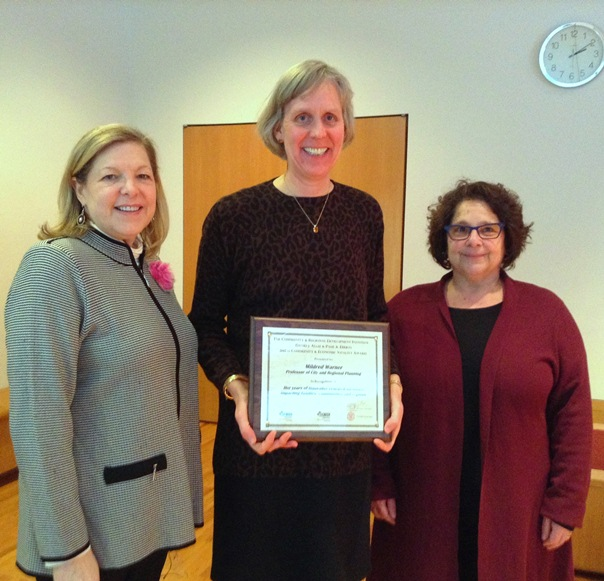

Planning Across Generations: Webinars and Presentations
Presentation:
Child and Age-Friendly Communities: Linking ECE to the Economy and Broader Society
Presentation to Head Start Conference, Washington D.C., July 2014
(download PDF)
Presentation:
Planning Across Generations: New Approaches to Planning and Economic Development
Presentation to Bronfenbrenner Center for Translational Research, Cornell University
(watch the presentation)
Webinar:
Does Gender Matter in Planning for the Aging?
September 6, 2013
America's aging population has forced planners to rethink service delivery and community design. This session examines the challenges of planning for aging citizens, especially female baby boomers.
(download PDF or watch the webinar)
American Planning Association National Conference
April 13-17, 2013 Chicago, IL
-
Planning for Aging: Does Gender Matter?
April 14, 2013, sponsored by APA Planning and Women Division
As the Baby Boomer generation ages, planners must re-imagine a community designed to accommodate the needs of residents across the life cycle. Planners can respond by implementing policies and practices in areas such as housing, transportation and parks and recreation that enhance participation of elders in their communities and reduce stress on caregivers who are primarily women.
Panelists
Jana Lynott, AARP, www.aarp.org/ppi/liv-com (download presentation)
Esther S. Greenhouse, www.esthergreenhouse.com (download presentation)
Laura M. Keyes, Atlanta Regional Commission, http://www.atlantaregional.com/about-us/
Mildred Warner, Cornell University (download presentation)
Read the newsletter article Does Gender Matter in Planning for the Aging?
-
DC-CPC Task Force on Collaboration: Age-Friendly Communities (Facilitated Discussion)
April 15, 2013
Discussants: Ramona Mullahey (pdf), Aldea Douglas, AARP (pdf), Mildred Warner, Cornell (pdf)
Read the newsletter article Planning for the Aging: It's all about Process.
-
Big Ideas for Small Towns: Aging in Place (Facilitated Discussion)
April 15, 2013, sponsored by APA Small Town and Rural Division (pdf)
Read the newsletter articles prepared from the facilitated discussion:
Parks & Sidewalks
Home Delivery and Mobile Services
Promoting Online Social Networks
New Options for Transportation
Retrofitted Housing
Rezoning for Renewal
Shared Housing
-
Issue Briefs Prepared for Conference:
Overview
Rural Responses
Economic Importance
Reconnecting Planning to Health
Funding
Multigenerational Schoolyards
Neighborhood Schools
The Planning Gender Gap
Demographics Matter
Informal Networks
Communication
Bibliography
Presentation:
2013 Urban Affairs Association Conference, San Francisco, CA
April 4, 2013, San Francisco, CA
"Planning for Aging in Place: Stimulating a Market and Government Response"
Mildred E. Warner, Professor, Cornell University
(download presentation)
Webinar:
"Child- and Age-Friendly Communities: Fostering communities as if all people mattered."
Private Practice Division, American Planning Association
Feb. 15, 2013
Overview:
An aging population and the 'browning' of America are creating demand for communities that are friendly to all generations and ethnicities. Multi-generational planning uses smart growth principles to create livable communities that deliver places that help young and old remain active, connected and thriving in place. Real progress will occur with a paradigm shift if generations work together and cultural imperatives are addressed. This session highlights both research and on-the-ground experience in multi-generational planning.
Panelists and Presentations:
"Multi-generational Planning: Linking Needs of Children and Elders" (download PDF)
Mildred Warner, Professor, Dept. of City and Regional Planning, Cornell University
"Suburbs and Schools: Allies or Enemies to Multi-Generational Planning" (download PDF)
Lydia Morken, Research & Extension Specialist, Dept. of City and Regional Planning, Cornell University
Dorian Block, Age-friendly NYC Project Manager, New York Academy of Medicine
(download PDF of presentation)
Moderator:
Ramona Mullahey, Senior Analyst - Field Policy and Management, U.S. Department of Housing and Urban Development, Honolulu Field Office
(download PDF of presentation)
Presentation:
CaRDI's Research Roundtable Seminar on Planning Across Generations
February 11, 2013
Professor Warner received the David J. Allee and Paul R. Eberts Community and Economic Vitality Award from Cornell's Community and Regional Development Institute for her years of innovative research on issues impacting families, communities, and regions. Click here for more information about the award.

Panelists:
Mildred Warner
Professor, City and Regional Planning, Cornell University
(download presentation)
Dana Friedman
President, The Early Years Institute
(download presentation)
Ruth Finkelstein
Director, Age-Friendly New York City
Senior Vice President, Policy and Planning, New York Academy of Medicine
(download presentation)
Photo: Mildred Warner (center) with Dana Friedman (left) and Ruth Finkelstein
Presentation:
Mayors Innovation Project - Winter Meeting
January 16, 2013, Washington, DC
Professor Warner presented to the Mayors Innovation Project at its Winter Meeting, January 15-16, 2013, in Washington DC. Click here for more information about the MIP Winter Meeting, including session information and other presentations.
Panelists for session "Sustaining the Multi-generational City":
-
Mildred Warner
Professor, Cornell University
"Multi-generational Planning: Linking the Needs of Children and Elders" (download presentation)
-
Joseph Curatone, Mayor, Somerville, Massachusetts
- Laura Keyes, Community Development Manager for Lifelong Communities, Atlanta Regional Commission
Syndicated columnist Neal Peirce, who also attended the MIP meeting, featured multi-generational planning in his weekly column on cities soon thereafter,
"Cities for All: No Skipping Generations" - Citiwire.net
"The Value of Multi-generational Cities" - Seattle Times
Webinar:
"The Economic Impacts and Opportunities of Families: Children, Elders and Caregivers"
Women and Planning Division, American Planning Association
March 9, 2012
Panelists:
-
Mildred Warner (download presentation)
Professor, City and Regional Planning, Cornell University, Ithaca, NY
-
Deborah Howe (download presentation)
Professor and Chair, Department of Community and Regional Planning, Temple University, Philadelphia, PA
Webinar:
"Child Care and Sustainable Communities"
Women and Planning Division, American Planning Association
March 1, 2011
Child care and early education facilities and services contribute to the environmental, economic and social sustainability of communities. This is recognized by their inclusion in initiatives and policies, ranging from federal HUD Sustainable Communities grants to regional transportation plans and local comprehensive plans. These services are critical to the daily lives of working families and the economic health of our communities. Participants learned about immediate and long-term contributions of child care to local economies and community development, and acquired tools and strategies to facilitate development of child care facilities and services in conjunction with housing, transportation and economic development.
Panelists:
-
Mildred Warner (download presentation)
Professor, City and Regional Planning, Cornell University, Ithaca, NY
-
Kristen Anderson (download presentation)
Redwood City Child Care Planner, Child Care Planning and Policy Consultant
Presentation:
"Multigenerational Planning - Imagining the Community You Want to Live In"
American Planning Association National Conference: New Orleans, LA
April 10-12, 2010
US cities are undergoing profound demographic change. We need to reimagine communities built for residents across the life cycle. This session explored connections between the planning needs of families with young children and of the elderly who would like to age in place. Specific attention was given to housing, services and care supports.
Panelists:
Planning for Families, Children, and Child Care, by Kristen Anderson
Multigenerational Planning: Implications for Housing & Community, by Keith Wardrip, Senior Research Associate at the Center for Housing Policy
How Population Change Ushers in a New Era for Planning, by Dowell Myers, Professor of Urban Planning and Demography at the University of Southern California